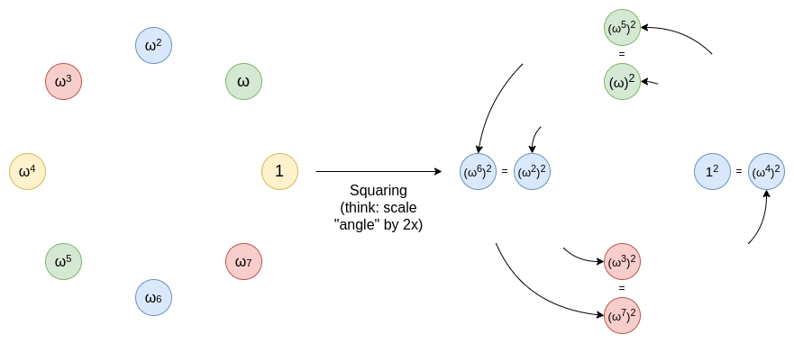
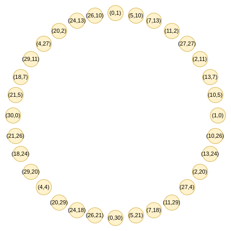
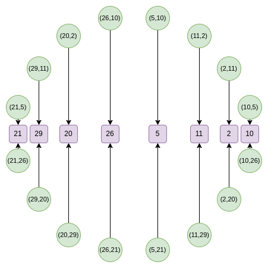
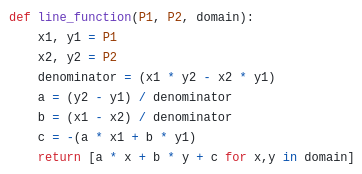
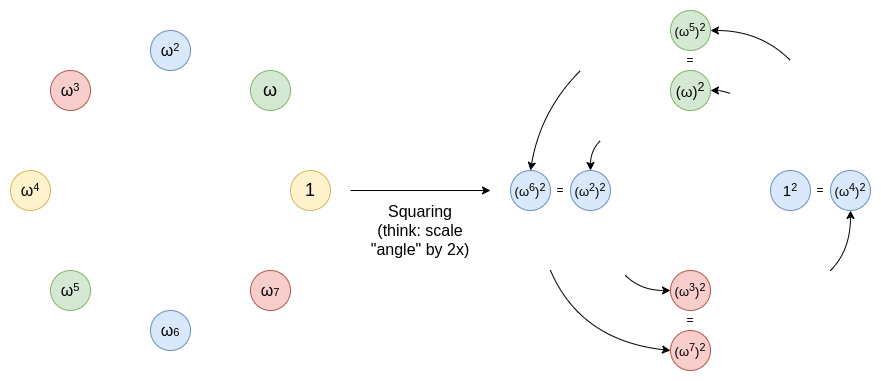
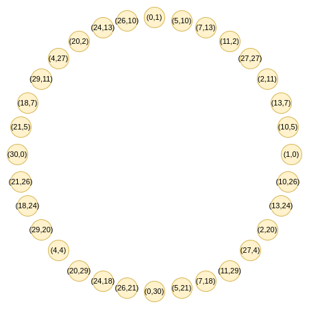
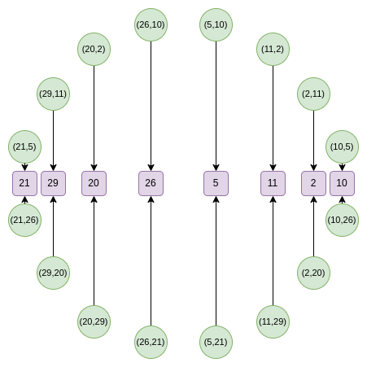
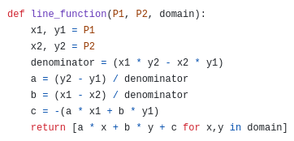

Exploring circle STARKs
2024 Jul 23
See all posts
Exploring circle STARKs
This article assumes familiarity with the basics of how SNARKs
and STARKs work; if you are not familiar, I recommend the first few
sections in this
article. Special thanks to Eli ben-Sasson, Shahar Papini, Avihu Levy
and others at starkware for feedback and discussion.
The most important trend in STARK protocol design over the last two
years has been the switch to working over small fields. The earliest
production implementations of STARKs worked over 256-bit fields -
arithmetic modulo large numbers such as 21888...95617 \(\approx 1.51 * 2^{253}\) - which made these
protocols naturally compatible with verifying elliptic curve-based
signatures, and made them easy to reason about. But this led to
inefficiency: in most cases we don't actually have good ways to make use
of these larger numbers, and so they ended up as mostly wasted space,
and even more wasted computation, since arithmetic over 4x bigger
numbers takes ~9x more
computation time. To deal with this, STARKs have started working over
smaller fields: first Goldilocks
(modulus \(2^{64} - 2^{32} + 1\)) and
then Mersenne31
and BabyBear (\(2^{31} - 1\) and
\(2^{31} - 2^{27} + 1\),
respectively).
This switch has already led to demonstrated massive improvements in
proving speed, most notably Starkware being able to prove
620,000 Poseidon2 hashes per second on an M3 laptop. Particularly,
this means that, provided we're willing to trust Poseidon2 as a hash
function, one of the hardest parts of making an efficient ZK-EVM
is effectively solved. But how do these techniques work, and how do
cryptographic proofs, which typically require large numbers for
security, get built over these fields? And how do these protocols
compare to even more exotic constructions
such as Binius?
This post will explore some of these nuances, with a particular eye to a
construction called Circle
STARKs (implemented in Starkware's stwo, Polygon's plonky3, and my
own implementation in (sort of) python), which has some unique
properties designed to be compatible with the highly efficient
Mersenne31 field.
Issues common to small
fields
One of the most important "tricks" when making hash-based proofs (or
really, any kind of proof) is the idea of proving things about
evaluations of a polynomial as a random point, as a substitute for
proving things about the underlying polynomials.
For example, suppose that a proof system requires you to generate a
commitment to a polynomial, \(A\),
which must satisfy \(A^3(x) + x - A(\omega*x)
= x^N\) (a pretty common type of claim to prove in ZK-SNARK
protocols). The protocol can require you to pick a random coordinate
\(r\), and prove that \(A(r) + r - A(\omega*r) = r^N\). And then in
turn, to prove that \(A(r) = c\), you
prove that \(Q = \frac{A - c}{X - r}\)
is a polynomial (as opposed to a fractional expression).
If you know \(r\) ahead of
time, you can always cheat these protocols. In this case, you could
just set \(A(r)\) to be zero, retrofit
\(A(\omega * r)\) to satisfy the
equation, and then let \(A\) be the
line that passes through those two points. And similarly for the second
step, if you know \(r\) ahead of time,
you can generate whatever \(Q\) you
want, and then retrofit \(A\) to match
it, even if \(A\) is a fractional (or
other non-polynomial) expression.
To prevent these attacks, we need to choose \(r\) after the attacker provides
\(A\) (the "Fiat-Shamir
heuristic" is a fancy name for setting \(r\) to be the hash of \(A\)). Importantly, we need to
choose \(r\) from a set large enough
that the attacker cannot guess it.
In elliptic curve based protocols and even 2019-era STARKs, this was
trivial: all of our math was done over 256-bit numbers, so we choose
\(r\) as a random 256-bit number, and
we're fine. With STARKs over smaller fields, we have a problem: there
are only about two billion possible values of \(r\) to choose from, and so an attacker
wanting to make a fake proof need only try two billion times - a lot of
work, but quite doable for a determined attacker!
There are two natural solutions to this problem:
- Perform multiple random checks
- Extension fields
The approach of performing multiple random checks is intuitively
appealing and simple: instead of checking at one coordinate,
you repeat the check at each of four random coordinates. This
is theoretically doable, but there is an efficiency issue. If you're
dealing with degree < \(N\)
polynomials over a size \(p\) field,
it's actually possible for an attacker to craft bad polynomials that
"look" good in \(N\) positions. Hence,
their chance of breaking one round of the protocol is \(\frac{N}{p}\). If eg. \(p = 2^{31} - 1\) and \(N = 2^{24}\), that means the attacker only
gets seven bits of security per round, and so you need to do not four,
but around 18 rounds, to be properly robust against such attackers.
Ideally, we would have something where we do \(k\) times more work but only have to
subtract \(N\) from the security level
once.
This gets us to the other solution: extension
fields. Extension fields are like complex numbers, but over
finite fields: we imagine into existence a new value, call it \(i\), and declare that \(i^2 = -1\). Multiplication becomes:
\((a+bi) * (c+di) = (ac - bd) + (ad +
bc)i\). We can now operate over pairs \((a,b)\) rather than just single numbers.
Assuming we're working over size \(\approx
2^{31}\) fields like Mersenne or BabyBear, this gets us up to
having \(\approx 2^{62}\) values from
which to choose \(r\). To go even
higher, we apply the same technique again, except we already used \(i\) so we need to define a new value
differently: in Mersenne31, we pick \(w\) where \(w^2 =
-2i-1\). Multiplication now becomes \((a + bi + cw + diw) * (e + fi + gw + hiw) =
...\)

OK fine, here's the code implementation. It's not optimal
(you can improve it with Karatsuba),
but it shows the principles.
Now, we have \(\approx 2^{124}\)
values to choose \(r\) from, which is
high enough for our security needs: if we are dealing with degree <
\(2^{20}\) polynomials, we get 104 bits
of security from one round. If we want to be paranoid and go up to the
more widely-accepted 128 bit security level, we can add some proof of
work into the protocol.
Note that we only actually use this extension field in the FRI
protocol, and other cases where random linear combinations are required.
The bulk of the math is done over only the "base field" (modulo \(2^{31}-1\) or \(15 * 2^{27} + 1\)), and almost all of the
data that is hashed is over the base field, so you only hash four bytes
per value. This lets us both benefit from the efficiency of small
fields, and retain the ability to dip into a larger field when we need
to do so for security.
Regular FRI
When building a SNARK or STARK, the first step is typically
arithmetization: reducing an arbitrary computation problem into an
equation where some of the variables and coefficients are polynomials
(eg. the equation often looks like \(C(T(x),
T(next(x))) = Z(x) * H(x)\), where \(C\), \(next\) and \(Z\) are provided and the solver needs to
provide \(T\) and \(H\)). Once you have such an equation, a
solution to the equation corresponds to a solution to the underlying
computational problem.
To prove that you have a solution, you need to prove that the values
that you are proposing actually are real polynomials (as opposed to
fractions, or datasets that look like one polynomial in one place and a
different polynomial in another place, or...), and have a certain maximum
degree. In order to do this, we apply a random linear combination trick
iteratively:
- Suppose you have evaluations of a polynomial \(A\), and you want to prove that its degree
is \(< 2^{20}\)
- Consider the polynomials \(B(x^2) = A(x) +
A(-x)\), and \(C(x^2) = \frac{A(x) -
A(-x)}{x}\).
- Let \(D\) be a random linear
combination \(B + rC\)
Essentially, what's going on is that \(B\) isolates the even coefficients of \(A\), and \(C\) isolates the odd coefficients. Given
\(B\) and \(C\), you can recover \(A\): \(A(x) =
B(x^2) + xC(x^2)\). And if \(A\)
really has degree \(< 2^{20}\), then
(i) \(B\) and \(C\) have degree \(< 2^{19}\). And being a random linear
combination, \(D\) must also have
degree \(< 2^{19}\).
We've reduced a "prove degree \(<
2^{20}\)" problem into a "prove degree \(< 2^{19}\)" problem. Repeat this 20
times, and you get the technique that is called "Fast Reed-Solomon
Interactive Oracle Proofs of Proximity", or "FRI". If someone tries
to push something through this technique which is not a degree
\(< 2^{20}\) polynomial, then the
second-round output will (with probability \(\approx 1 - \frac{1}{2^{124}}\)) not be a
degree \(< 2^{19}\) polynomial, the
third-round output will not be degree \(<
2^{18}\), and so on, and the final check at the end will fail. A
dataset which is equal to a degree \(<
2^{20}\) polynomial in most positions has some chance of
passing through the scheme, but in order to construct such a dataset you
need to know the underlying polynomial, so even such a
slightly-defective proof is a convincing argument that the prover could
generate a "real" proof if they wanted to. There are further technical
complexities in proving that this holds for all possible
inputs; understanding the fine details of this has been a major focus of
academic STARK research over the last five years.
Let's look into what's going on here in more detail, and what
properties are necessary to make this all work. At each step, we're
reducing the degree by a factor of 2, and we're also reducing
the domain (the set of points we're looking at) by a factor of
2. The former is what makes FRI work at all. The latter is what makes it
so blazing fast: because each round is 2x smaller than the previous, the
total cost is \(O(N)\) instead of \(O(N*log(N))\).
To do this domain reduction, we needed a two-to-one map:
\(\{x, -x\} \rightarrow x^2\). What's
nice about this two-to-one map is that it's repeatable: if you start
with a multiplicative subgroup (a set \(\{1, \omega, \omega^2 ...
\omega^{n-1}\}\)), then you start off with a set where for any
\(x\) in the set, \(-x\) is also in the set (as if \(x = \omega^k\), \(-x = \omega^{k\pm\frac{N}{2}}\)), and if
you then square it to get \(\{1, (\omega^2),
(\omega^2)^2 ... (\omega^2)^{\frac{n}{2}-1}\}\), then the exact
same property applies, and so you can keep reducing all the way down to
one value (though in practice we usually stop a little bit earlier).

You can think of this as being an operation of taking a line that
goes around a circle, and stretching that line until it makes two
rotations along that circle. A point at x degrees becomes a point at 2x
degrees. Each point from 0...179 degrees has a corresponding point at
180...359 degrees that it ends up overlapping with. And you can repeat
this procedure again and again.
For this to work, you need the original multiplicative subgroup to
have a size with a large power of 2 as a product. BabyBear has modulus
\(15 * 2^{27} + 1\), and so the largest
possible subgroup is all nonzero values - hence, size \(15 * 2^{27}\). This is very friendly to the
above technique. You could take a subgroup of size \(2^{27}\), or you could just take that full
set, do the FRI to reduce the polynomial all the way down to degree 15,
and then check tthe degree directly at the end. Mersenne31, however,
does not work in this way. The modulus is \(2^{31} - 1\), and so the multiplicative
subgroup has size \(2^{31} - 2\). This
can be divided by 2 only once. From there forward, we have no way to do
an FFT - at least not using the technique above.
This is a tragedy, because Mersenne31 is a super-convenient
field to do arithmetic in using existing 32-bit CPU/GPU operations. If
you add two numbers, the result may be above \(2^{31}-1\), but you can reduce it by doing
\(x \rightarrow x + (x >> 31)\),
where \(>>\) is a bit shift. For
multiplication, you can do something similar, though you need to use a
special (but commonly available) opcode that returns the "high-order
bits" of a multiplication result (ie. \(floor(\frac{xy}{2^{32}})\)). This allows
arithmetic to be around 1.3x more efficient than BabyBear. If we
could do FRI over Mersenne31, it would make things
significantly better for us.
Circle FRI
Here is where the clever trick of circle
STARKs comes in. Given a prime \(p\), it turns out that we also have easy
access to a group of size \(p+1\) that
has similar two-to-one properties: the set of points \((x,y)\) where \(x^2 + y^2 = 1\). Let's look at this
structure modulo 31:

The points follow an addition law, which might feel very familiar if
you've recently done either trigonometry
or complex
multiplication:
\((x_1, y_1) + (x_2, y_2) = (x_1x_2 -
y_1y_2, x_1y_2 + x_2y_1)\)
The doubling form is:
\(2 * (x, y) = (2x^2 - 1, 2xy)\)
Now, let's focus on only the points that are in "odd"
positions on this circle:

Now, here is our FFT. First, we collapse all the points down to a
single line. Our equivalent of the \(B(x^2)\) and \(C(x^2)\) formulas that we had in regular
FRI is:
\(f_0(x) = \frac{F(x,y) +
F(x,-y)}{2}\) \(f_1(x) = \frac{F(x,y) -
F(x,-y)}{2y}\)
We can then take a random linear combination, and we get a
one-dimensional \(F\) that is over a
subset of the x line:

From the second round onward, the map changes:
\(f_0(2x^2-1) = \frac{F(x) +
F(-x)}{2}\) \(f_1(2x^2-1) = \frac{F(x)
- F(-x)}{2x}\)
And this map actually takes the above set, and reduces its size in
half each time! What is going on here is that each \(x\) is in some sense "standing in" for two
points: \((x,y)\) and \((x,-y)\). And \(x
\rightarrow 2x^2-1\) is the point doubling law above. Hence, we
take the \(x\) coordinate of two
opposite points on the circle, and convert it into the \(x\) coordinate of the doubled point.
For example, if we take the second-rightmost value, \(2\), and apply the map, we get \(2(2^2) - 1 = 7\). If we go back to the
original circle, \((2,11)\) is the
third point going counterclockwise from the right, and so if we double
it, we get the sixth point going counterclockwise from the right, which
is... \((7, 13)\).
This could have all been done two-dimensionally, but
operating over one dimension makes things more efficient.
Circle FFTs
An algorithm closely related to FRI is the fast Fourier
transform, which takes a set of \(n\) evaluations of a degree \(< n\) polynomial and converts it into
the \(n\) coefficients of the
polynomial. An FFT follows the same path as a FRI, except instead of
generating a random linear combination \(f_0\) and \(f_1\) at each step, it just recursively
applies a half-sized FFT on both, and then takes the output of \(FFT(f_0)\) as the even coefficients and
\(FFT(f_1)\) as the odd
coefficients.
The circle group also supports an FFT, which is also constructed from
FRI along similar lines. However, a key difference is that the
objects that circle FFTs (and circle FRI) work over are not technically
polynomials. Rather, they are what mathematicians call a Riemann-Roch
space: in this case, polynomials "modulo" the circle (\(x^2 + y^2 - 1 = 0\)). That is, we treat any
multiple of \(x^2 + y^2 - 1\) as being
equal to zero. Another way of thinking about it is: we only allow
degree-1 powers of \(y\): as soon as we
get a \(y^2\) term, we replace it with
\(1 - x^2\).
One other thing that this implies is that the "coefficients" that a
circle FFT outputs are not monomials like in regular FRI (eg. if regular
FRI outputs \([6, 2, 8, 3]\), then we
know this means \(P(x) = 3x^3 + 8x^2 + 2x =
6\)). Instead, the coefficients are in a strange basis specific
to circle FFTs:
\(\{1, y, x, xy, 2x^2-1, 2x^2y-y, 2x^3-x,
2x^3y-xy, 8 x^4 - 8 x^2 + 1...\}\)
The good news is that as a developer, you can almost completely
ignore this. STARKs never give you a need to know the coefficients.
Instead, you can just always store "polynomials" as a set of evaluations
on a particular domain. The only place you need to use FFTs, is to
perform (the Riemann-Roch space analogue of) low-degree
extension: given \(N\) values,
generate \(k*N\) values that are on
that same polynomial. In that case, you can do an FFT to generate the
coefficients, append \((k-1)n\) zeroes
to those coefficients, and then do an inverse-FFT to get back your
larger set of evaluations.
Circle FFTs are not the only type of "exotic FFT". Elliptic
curve FFTs are even more powerful, because they work over
any finite field (prime, binary, etc). However, ECFFTs are even
more complex to understand and less efficient, and so because we can use
circle FFTs for \(p = 2^{31}-1\), we
do.
From here, let's get into some of the more esoteric minutiae that
will be different for someone implementing circle STARKs, as compared to
regular STARKs.
Quotienting
A common thing that you do in STARK protocols is you take quotients
at specific points, either deliberately chosen or randomly chosen. For
example, if you want to prove that \(P(x) =
y\), you do so by providing \(Q =
\frac{P - y}{X - x}\), and proving that \(Q\) is a polynomial (as opposed to a
fractional value). Randomly choosing evaluation points is used in the DEEP-FRI protocol, which
lets FRI be secure with fewer Merkle branches.
Here, we get to one subtle challenge: in the circle group, there
is no line function, analogous to \(X -
x\) for regular FRI, that passes through only one point.
This is visible geometrically:

You could make a line function tangent to one point \((P_x, P_y)\), but that would pass through
the point "with multiplicity 2" - that is, for a polynomial to be a
multiple of that line function, it would have to fulfill a much stricter
condition than just being zero at that point. Hence, you can't prove an
evaluation at only one point. So what do we do? Basically, we bite the
bullet, and prove an evaluation at two points, adding a dummy
point whose evaluation we don't need to care about.

A line function: \(ax + by +
c\). If you turn it into an equation by forcing it to equal 0,
then you might recognize it as a line in what
high school math calls "standard form".
If we have a polynomial \(P\) that
equals \(v_1\) at \(P_1\), and \(v_2\) at \(P_2\), then we choose an
interpolant \(I\): a line
function that equals \(v_1\) at \(P_1\), and \(v_2\) at \(P_2\). This can be as simple as \(v_1 + (v_2 - v_1) * \frac{y - y_1}{(P_2)_y -
(P_1)_y}\). We then prove that \(P\) equals \(v_1\) at \(P_1\), and \(v_2\) at \(P_2\) by subtracting \(I\) (so \(P-I\) equals zero at both points), dividing
by \(L\) (the line function between
\(P_1\) and \(P_2\)), and proving that the quotient \(\frac{P - I}{L}\) is a polynomial.
Vanishing polynomials
In a STARK, the polynomial equation you're trying to prove often
looks like \(C(P(x), P(next(x))) = Z(x) *
H(x)\), where \(Z(x)\) is a
polynomial that equals zero across your entire original evaluation
domain. In "regular" STARKs, that function is just \(x^n - 1\). In circle STARKs, you the
equivalent is:
\(Z_1(x,y) = y\)
\(Z_2(x,y) = x\)
\(Z_{n+1}(x,y) = (2 * Z_n(x,y)^2) -
1\)
Notice that you can derive the vanishing polynomial from the folding
function: in regular STARKs, you're repeating \(x \rightarrow x^2\), here you're repeating
\(x \rightarrow 2x^2-1\), though you're
doing something different for the first round, because the first round
is special.
Reverse bit order
In STARKs, evaluations of a polynomial are typically arranged not in
the "natural" order (\(P(1)\), \(P(\omega)\), \(P(\omega^2)\) ... \(P(\omega^{n-1})\)), but rather what I call
"reverse bit order":
\(P(1)\), \(P(\omega^{\frac{n}{2}})\), \(P(\omega^{\frac{n}{4}})\), \(P(\omega^{\frac{3n}{4}})\), \(P(\omega^{\frac{n}{8}})\), \(P(\omega^{\frac{5n}{8}})\), \(P(\omega^{\frac{3n}{8}})\), \(P(\omega^{\frac{7n}{8}})\), \(P(\omega^{\frac{n}{16}})\)...
If we set \(n = 16\), and we focus
just on which powers of \(\omega\)
we're evaluating at, the list looks like this:
\(\{0, 8, 4, 12, 2, 10, 6, 14, 1, 9, 5, 13,
3, 11, 7, 15\}\)
This ordering has the key property that values which get grouped
together early on in a FRI evaluation are put beside each other in the
ordering. For example, the first step of FRI groups together \(x\) and \(-x\). In the \(n=16\) case, \(\omega^8 = -1\), so that means \(P(\omega^i)\) and \(P(-\omega^i) = P(\omega^{i+8})\). And, as
we can see, those are exactly the pairs that are right beside each
other. The second step of FRI groups together \(P(\omega^i)\), \(P(\omega^{i+4})\), \(P(\omega^{i+8})\) and \(P(\omega^{i+12})\). And, those are exactly
the groups of four that we see. And so forth. This makes FRI much more
space-efficient, because it lets you provide one Merkle proof for both
of the values that get folded together (or, if you fold \(k\) rounds at a time, all \(2^k\) of the values) simultaneously.
In circle STARKs, the folding structure is a bit different: in the
first step we group together \((x, y)\)
with \((x, -y)\), in the second step
\(x\) with \(-x\), and in subsequent steps \(p\) with \(q\), selecting \(p\) and \(q\) such that \(Q^i(p) = -Q^i(q)\) where \(Q^i\) is the map \(x \rightarrow 2x^2-1\) repeated \(i\) times. If we think of the points in
terms of their position along the circle, at each step this looks like
the first point getting paired with the last, the second with the second
last, etc.
To adjust reverse bit order to reflect this folding structure, we
reverse every bit except the last. We keep the last bit, and we
also use it to determine whether or not to flip the other bits.

A size-16 folded reverse bit order looks as follows:
\(\{0, 15, 8, 7, 4, 11, 12, 3, 2, 13, 10,
5, 6, 9, 14, 1\}\)
If you look at the circle in the previous section, the 0th, 15th, 8th
and 7th points (going counterclockwise, starting from the right) are of
the form \((x, y)\), \((x, -y)\), \((-x,
-y)\) and \((-x, y)\), which is
exactly what we need.
Efficiency
Circle STARKs (and 31-bit-prime STARKs in general) are very
efficient. A realistic computation that is being proven in a circle
STARK would most likely involve a few types of computation:
- Native arithmetic, used for "business logic" such as counting
- Native arithmetic, used for cryptography (eg. hash functions like Poseidon)
- Lookup arguments, a
generic way to do many kinds of computation efficiently by implementing
them via reading values from tables
The key measure of efficiency is: are you using the entire space in
the computational trace to do useful work, or are you leaving a lot of
wasted space? In large-field SNARKs, there is a lot of wasted space:
business logic and lookup tables mostly involve computation over small
numbers (often the numbers are under N in an N-step computation, so
under \(2^{25}\) in practice), but you
have to pay the cost of using a size \(2^{256}\)-bit field anyway. Here, the field
is size \(2^{31}\), so the wasted space
is not large. "Designed-for-SNARKs" low-arithmetic-complexity hashes
(eg. Poseidon) use every bit of each number in the trace in any
field.
Hence, circle STARKs actually get pretty close to optimal! Binius
is even stronger, because it lets you mix-and-match fields of different
sizes and thereby get even more efficient bit packing for everything.
Binius also opens up options for doing 32-bit addition without incurring
the overhead of lookup tables. However, those gains at the cost of (in
my opinion) significantly higher theoretical complexity, whereas circle
STARKs (and even more so BabyBear-based regular STARKs) are conceptually
quite simple.
Conclusion: what
do I think about circle STARKs?
Circle STARKs don't impose too many extra complexities on
developers compared to regular STARKs. In the process of making an
implementation, the above three issues are essentially the only
differences that I saw compared to regular FRI. The underlying math
behind what the "polynomials" that circle FRI is operating on is quite
counterintuitive, and takes a while to understand and appreciate. But it
just so happens that this complexity is hidden away in such a way it's
not that visible to developers. The complexity of circle math
is encapsulated,
not systemic.
Understanding circle FRI and circle FFTs can also be a good
intellectual gateway to understanding other "exotic FFTs": most notably
binary-field
FFTs as used in Binius
and in LibSTARK
before, and also spookier constructions such as elliptic curve FFTs, which
use few-to-1 maps that work nicely with elliptic curve point
operations.
With the combination of Mersenne31, BabyBear, and binary-field
techniques like Binius, it does feel like we are approaching the limits
of efficiency of the "base layer" of STARKs. At this point, I am
expecting the frontiers of STARK optimization to move to making
maximally-efficient arithmetizations of primitives like hash functions
and signatures (and optimizing those primitives themselves for that
purpose), making recursive constructions to enable more parallelization,
arithmetizing VMs to improve developer experience, and other
higher-level tasks.
Exploring circle STARKs
2024 Jul 23 See all postsThis article assumes familiarity with the basics of how SNARKs and STARKs work; if you are not familiar, I recommend the first few sections in this article. Special thanks to Eli ben-Sasson, Shahar Papini, Avihu Levy and others at starkware for feedback and discussion.
The most important trend in STARK protocol design over the last two years has been the switch to working over small fields. The earliest production implementations of STARKs worked over 256-bit fields - arithmetic modulo large numbers such as
21888...95617\(\approx 1.51 * 2^{253}\) - which made these protocols naturally compatible with verifying elliptic curve-based signatures, and made them easy to reason about. But this led to inefficiency: in most cases we don't actually have good ways to make use of these larger numbers, and so they ended up as mostly wasted space, and even more wasted computation, since arithmetic over 4x bigger numbers takes ~9x more computation time. To deal with this, STARKs have started working over smaller fields: first Goldilocks (modulus \(2^{64} - 2^{32} + 1\)) and then Mersenne31 and BabyBear (\(2^{31} - 1\) and \(2^{31} - 2^{27} + 1\), respectively).This switch has already led to demonstrated massive improvements in proving speed, most notably Starkware being able to prove 620,000 Poseidon2 hashes per second on an M3 laptop. Particularly, this means that, provided we're willing to trust Poseidon2 as a hash function, one of the hardest parts of making an efficient ZK-EVM is effectively solved. But how do these techniques work, and how do cryptographic proofs, which typically require large numbers for security, get built over these fields? And how do these protocols compare to even more exotic constructions such as Binius? This post will explore some of these nuances, with a particular eye to a construction called Circle STARKs (implemented in Starkware's stwo, Polygon's plonky3, and my own implementation in (sort of) python), which has some unique properties designed to be compatible with the highly efficient Mersenne31 field.
Issues common to small fields
One of the most important "tricks" when making hash-based proofs (or really, any kind of proof) is the idea of proving things about evaluations of a polynomial as a random point, as a substitute for proving things about the underlying polynomials.
For example, suppose that a proof system requires you to generate a commitment to a polynomial, \(A\), which must satisfy \(A^3(x) + x - A(\omega*x) = x^N\) (a pretty common type of claim to prove in ZK-SNARK protocols). The protocol can require you to pick a random coordinate \(r\), and prove that \(A(r) + r - A(\omega*r) = r^N\). And then in turn, to prove that \(A(r) = c\), you prove that \(Q = \frac{A - c}{X - r}\) is a polynomial (as opposed to a fractional expression).
If you know \(r\) ahead of time, you can always cheat these protocols. In this case, you could just set \(A(r)\) to be zero, retrofit \(A(\omega * r)\) to satisfy the equation, and then let \(A\) be the line that passes through those two points. And similarly for the second step, if you know \(r\) ahead of time, you can generate whatever \(Q\) you want, and then retrofit \(A\) to match it, even if \(A\) is a fractional (or other non-polynomial) expression.
To prevent these attacks, we need to choose \(r\) after the attacker provides \(A\) (the "Fiat-Shamir heuristic" is a fancy name for setting \(r\) to be the hash of \(A\)). Importantly, we need to choose \(r\) from a set large enough that the attacker cannot guess it.
In elliptic curve based protocols and even 2019-era STARKs, this was trivial: all of our math was done over 256-bit numbers, so we choose \(r\) as a random 256-bit number, and we're fine. With STARKs over smaller fields, we have a problem: there are only about two billion possible values of \(r\) to choose from, and so an attacker wanting to make a fake proof need only try two billion times - a lot of work, but quite doable for a determined attacker!
There are two natural solutions to this problem:
The approach of performing multiple random checks is intuitively appealing and simple: instead of checking at one coordinate, you repeat the check at each of four random coordinates. This is theoretically doable, but there is an efficiency issue. If you're dealing with degree < \(N\) polynomials over a size \(p\) field, it's actually possible for an attacker to craft bad polynomials that "look" good in \(N\) positions. Hence, their chance of breaking one round of the protocol is \(\frac{N}{p}\). If eg. \(p = 2^{31} - 1\) and \(N = 2^{24}\), that means the attacker only gets seven bits of security per round, and so you need to do not four, but around 18 rounds, to be properly robust against such attackers. Ideally, we would have something where we do \(k\) times more work but only have to subtract \(N\) from the security level once.
This gets us to the other solution: extension fields. Extension fields are like complex numbers, but over finite fields: we imagine into existence a new value, call it \(i\), and declare that \(i^2 = -1\). Multiplication becomes: \((a+bi) * (c+di) = (ac - bd) + (ad + bc)i\). We can now operate over pairs \((a,b)\) rather than just single numbers. Assuming we're working over size \(\approx 2^{31}\) fields like Mersenne or BabyBear, this gets us up to having \(\approx 2^{62}\) values from which to choose \(r\). To go even higher, we apply the same technique again, except we already used \(i\) so we need to define a new value differently: in Mersenne31, we pick \(w\) where \(w^2 = -2i-1\). Multiplication now becomes \((a + bi + cw + diw) * (e + fi + gw + hiw) = ...\)
OK fine, here's the code implementation. It's not optimal (you can improve it with Karatsuba), but it shows the principles.
Now, we have \(\approx 2^{124}\) values to choose \(r\) from, which is high enough for our security needs: if we are dealing with degree < \(2^{20}\) polynomials, we get 104 bits of security from one round. If we want to be paranoid and go up to the more widely-accepted 128 bit security level, we can add some proof of work into the protocol.
Note that we only actually use this extension field in the FRI protocol, and other cases where random linear combinations are required. The bulk of the math is done over only the "base field" (modulo \(2^{31}-1\) or \(15 * 2^{27} + 1\)), and almost all of the data that is hashed is over the base field, so you only hash four bytes per value. This lets us both benefit from the efficiency of small fields, and retain the ability to dip into a larger field when we need to do so for security.
Regular FRI
When building a SNARK or STARK, the first step is typically arithmetization: reducing an arbitrary computation problem into an equation where some of the variables and coefficients are polynomials (eg. the equation often looks like \(C(T(x), T(next(x))) = Z(x) * H(x)\), where \(C\), \(next\) and \(Z\) are provided and the solver needs to provide \(T\) and \(H\)). Once you have such an equation, a solution to the equation corresponds to a solution to the underlying computational problem.
To prove that you have a solution, you need to prove that the values that you are proposing actually are real polynomials (as opposed to fractions, or datasets that look like one polynomial in one place and a different polynomial in another place, or...), and have a certain maximum degree. In order to do this, we apply a random linear combination trick iteratively:
Essentially, what's going on is that \(B\) isolates the even coefficients of \(A\), and \(C\) isolates the odd coefficients. Given \(B\) and \(C\), you can recover \(A\): \(A(x) = B(x^2) + xC(x^2)\). And if \(A\) really has degree \(< 2^{20}\), then (i) \(B\) and \(C\) have degree \(< 2^{19}\). And being a random linear combination, \(D\) must also have degree \(< 2^{19}\).
We've reduced a "prove degree \(< 2^{20}\)" problem into a "prove degree \(< 2^{19}\)" problem. Repeat this 20 times, and you get the technique that is called "Fast Reed-Solomon Interactive Oracle Proofs of Proximity", or "FRI". If someone tries to push something through this technique which is not a degree \(< 2^{20}\) polynomial, then the second-round output will (with probability \(\approx 1 - \frac{1}{2^{124}}\)) not be a degree \(< 2^{19}\) polynomial, the third-round output will not be degree \(< 2^{18}\), and so on, and the final check at the end will fail. A dataset which is equal to a degree \(< 2^{20}\) polynomial in most positions has some chance of passing through the scheme, but in order to construct such a dataset you need to know the underlying polynomial, so even such a slightly-defective proof is a convincing argument that the prover could generate a "real" proof if they wanted to. There are further technical complexities in proving that this holds for all possible inputs; understanding the fine details of this has been a major focus of academic STARK research over the last five years.
Let's look into what's going on here in more detail, and what properties are necessary to make this all work. At each step, we're reducing the degree by a factor of 2, and we're also reducing the domain (the set of points we're looking at) by a factor of 2. The former is what makes FRI work at all. The latter is what makes it so blazing fast: because each round is 2x smaller than the previous, the total cost is \(O(N)\) instead of \(O(N*log(N))\).
To do this domain reduction, we needed a two-to-one map: \(\{x, -x\} \rightarrow x^2\). What's nice about this two-to-one map is that it's repeatable: if you start with a multiplicative subgroup (a set \(\{1, \omega, \omega^2 ... \omega^{n-1}\}\)), then you start off with a set where for any \(x\) in the set, \(-x\) is also in the set (as if \(x = \omega^k\), \(-x = \omega^{k\pm\frac{N}{2}}\)), and if you then square it to get \(\{1, (\omega^2), (\omega^2)^2 ... (\omega^2)^{\frac{n}{2}-1}\}\), then the exact same property applies, and so you can keep reducing all the way down to one value (though in practice we usually stop a little bit earlier).

You can think of this as being an operation of taking a line that goes around a circle, and stretching that line until it makes two rotations along that circle. A point at x degrees becomes a point at 2x degrees. Each point from 0...179 degrees has a corresponding point at 180...359 degrees that it ends up overlapping with. And you can repeat this procedure again and again.
For this to work, you need the original multiplicative subgroup to have a size with a large power of 2 as a product. BabyBear has modulus \(15 * 2^{27} + 1\), and so the largest possible subgroup is all nonzero values - hence, size \(15 * 2^{27}\). This is very friendly to the above technique. You could take a subgroup of size \(2^{27}\), or you could just take that full set, do the FRI to reduce the polynomial all the way down to degree 15, and then check tthe degree directly at the end. Mersenne31, however, does not work in this way. The modulus is \(2^{31} - 1\), and so the multiplicative subgroup has size \(2^{31} - 2\). This can be divided by 2 only once. From there forward, we have no way to do an FFT - at least not using the technique above.
This is a tragedy, because Mersenne31 is a super-convenient field to do arithmetic in using existing 32-bit CPU/GPU operations. If you add two numbers, the result may be above \(2^{31}-1\), but you can reduce it by doing \(x \rightarrow x + (x >> 31)\), where \(>>\) is a bit shift. For multiplication, you can do something similar, though you need to use a special (but commonly available) opcode that returns the "high-order bits" of a multiplication result (ie. \(floor(\frac{xy}{2^{32}})\)). This allows arithmetic to be around 1.3x more efficient than BabyBear. If we could do FRI over Mersenne31, it would make things significantly better for us.
Circle FRI
Here is where the clever trick of circle STARKs comes in. Given a prime \(p\), it turns out that we also have easy access to a group of size \(p+1\) that has similar two-to-one properties: the set of points \((x,y)\) where \(x^2 + y^2 = 1\). Let's look at this structure modulo 31:

The points follow an addition law, which might feel very familiar if you've recently done either trigonometry or complex multiplication:
\((x_1, y_1) + (x_2, y_2) = (x_1x_2 - y_1y_2, x_1y_2 + x_2y_1)\)
The doubling form is:
\(2 * (x, y) = (2x^2 - 1, 2xy)\)
Now, let's focus on only the points that are in "odd" positions on this circle:
Now, here is our FFT. First, we collapse all the points down to a single line. Our equivalent of the \(B(x^2)\) and \(C(x^2)\) formulas that we had in regular FRI is:
\(f_0(x) = \frac{F(x,y) + F(x,-y)}{2}\) \(f_1(x) = \frac{F(x,y) - F(x,-y)}{2y}\)
We can then take a random linear combination, and we get a one-dimensional \(F\) that is over a subset of the x line:

From the second round onward, the map changes:
\(f_0(2x^2-1) = \frac{F(x) + F(-x)}{2}\) \(f_1(2x^2-1) = \frac{F(x) - F(-x)}{2x}\)
And this map actually takes the above set, and reduces its size in half each time! What is going on here is that each \(x\) is in some sense "standing in" for two points: \((x,y)\) and \((x,-y)\). And \(x \rightarrow 2x^2-1\) is the point doubling law above. Hence, we take the \(x\) coordinate of two opposite points on the circle, and convert it into the \(x\) coordinate of the doubled point.
For example, if we take the second-rightmost value, \(2\), and apply the map, we get \(2(2^2) - 1 = 7\). If we go back to the original circle, \((2,11)\) is the third point going counterclockwise from the right, and so if we double it, we get the sixth point going counterclockwise from the right, which is... \((7, 13)\).
This could have all been done two-dimensionally, but operating over one dimension makes things more efficient.
Circle FFTs
An algorithm closely related to FRI is the fast Fourier transform, which takes a set of \(n\) evaluations of a degree \(< n\) polynomial and converts it into the \(n\) coefficients of the polynomial. An FFT follows the same path as a FRI, except instead of generating a random linear combination \(f_0\) and \(f_1\) at each step, it just recursively applies a half-sized FFT on both, and then takes the output of \(FFT(f_0)\) as the even coefficients and \(FFT(f_1)\) as the odd coefficients.
The circle group also supports an FFT, which is also constructed from FRI along similar lines. However, a key difference is that the objects that circle FFTs (and circle FRI) work over are not technically polynomials. Rather, they are what mathematicians call a Riemann-Roch space: in this case, polynomials "modulo" the circle (\(x^2 + y^2 - 1 = 0\)). That is, we treat any multiple of \(x^2 + y^2 - 1\) as being equal to zero. Another way of thinking about it is: we only allow degree-1 powers of \(y\): as soon as we get a \(y^2\) term, we replace it with \(1 - x^2\).
One other thing that this implies is that the "coefficients" that a circle FFT outputs are not monomials like in regular FRI (eg. if regular FRI outputs \([6, 2, 8, 3]\), then we know this means \(P(x) = 3x^3 + 8x^2 + 2x = 6\)). Instead, the coefficients are in a strange basis specific to circle FFTs:
\(\{1, y, x, xy, 2x^2-1, 2x^2y-y, 2x^3-x, 2x^3y-xy, 8 x^4 - 8 x^2 + 1...\}\)
The good news is that as a developer, you can almost completely ignore this. STARKs never give you a need to know the coefficients. Instead, you can just always store "polynomials" as a set of evaluations on a particular domain. The only place you need to use FFTs, is to perform (the Riemann-Roch space analogue of) low-degree extension: given \(N\) values, generate \(k*N\) values that are on that same polynomial. In that case, you can do an FFT to generate the coefficients, append \((k-1)n\) zeroes to those coefficients, and then do an inverse-FFT to get back your larger set of evaluations.
Circle FFTs are not the only type of "exotic FFT". Elliptic curve FFTs are even more powerful, because they work over any finite field (prime, binary, etc). However, ECFFTs are even more complex to understand and less efficient, and so because we can use circle FFTs for \(p = 2^{31}-1\), we do.
From here, let's get into some of the more esoteric minutiae that will be different for someone implementing circle STARKs, as compared to regular STARKs.
Quotienting
A common thing that you do in STARK protocols is you take quotients at specific points, either deliberately chosen or randomly chosen. For example, if you want to prove that \(P(x) = y\), you do so by providing \(Q = \frac{P - y}{X - x}\), and proving that \(Q\) is a polynomial (as opposed to a fractional value). Randomly choosing evaluation points is used in the DEEP-FRI protocol, which lets FRI be secure with fewer Merkle branches.
Here, we get to one subtle challenge: in the circle group, there is no line function, analogous to \(X - x\) for regular FRI, that passes through only one point. This is visible geometrically:
You could make a line function tangent to one point \((P_x, P_y)\), but that would pass through the point "with multiplicity 2" - that is, for a polynomial to be a multiple of that line function, it would have to fulfill a much stricter condition than just being zero at that point. Hence, you can't prove an evaluation at only one point. So what do we do? Basically, we bite the bullet, and prove an evaluation at two points, adding a dummy point whose evaluation we don't need to care about.

A line function: \(ax + by + c\). If you turn it into an equation by forcing it to equal 0, then you might recognize it as a line in what high school math calls "standard form".
If we have a polynomial \(P\) that equals \(v_1\) at \(P_1\), and \(v_2\) at \(P_2\), then we choose an interpolant \(I\): a line function that equals \(v_1\) at \(P_1\), and \(v_2\) at \(P_2\). This can be as simple as \(v_1 + (v_2 - v_1) * \frac{y - y_1}{(P_2)_y - (P_1)_y}\). We then prove that \(P\) equals \(v_1\) at \(P_1\), and \(v_2\) at \(P_2\) by subtracting \(I\) (so \(P-I\) equals zero at both points), dividing by \(L\) (the line function between \(P_1\) and \(P_2\)), and proving that the quotient \(\frac{P - I}{L}\) is a polynomial.
Vanishing polynomials
In a STARK, the polynomial equation you're trying to prove often looks like \(C(P(x), P(next(x))) = Z(x) * H(x)\), where \(Z(x)\) is a polynomial that equals zero across your entire original evaluation domain. In "regular" STARKs, that function is just \(x^n - 1\). In circle STARKs, you the equivalent is:
\(Z_1(x,y) = y\)
\(Z_2(x,y) = x\)
\(Z_{n+1}(x,y) = (2 * Z_n(x,y)^2) - 1\)
Notice that you can derive the vanishing polynomial from the folding function: in regular STARKs, you're repeating \(x \rightarrow x^2\), here you're repeating \(x \rightarrow 2x^2-1\), though you're doing something different for the first round, because the first round is special.
Reverse bit order
In STARKs, evaluations of a polynomial are typically arranged not in the "natural" order (\(P(1)\), \(P(\omega)\), \(P(\omega^2)\) ... \(P(\omega^{n-1})\)), but rather what I call "reverse bit order":
\(P(1)\), \(P(\omega^{\frac{n}{2}})\), \(P(\omega^{\frac{n}{4}})\), \(P(\omega^{\frac{3n}{4}})\), \(P(\omega^{\frac{n}{8}})\), \(P(\omega^{\frac{5n}{8}})\), \(P(\omega^{\frac{3n}{8}})\), \(P(\omega^{\frac{7n}{8}})\), \(P(\omega^{\frac{n}{16}})\)...
If we set \(n = 16\), and we focus just on which powers of \(\omega\) we're evaluating at, the list looks like this:
\(\{0, 8, 4, 12, 2, 10, 6, 14, 1, 9, 5, 13, 3, 11, 7, 15\}\)
This ordering has the key property that values which get grouped together early on in a FRI evaluation are put beside each other in the ordering. For example, the first step of FRI groups together \(x\) and \(-x\). In the \(n=16\) case, \(\omega^8 = -1\), so that means \(P(\omega^i)\) and \(P(-\omega^i) = P(\omega^{i+8})\). And, as we can see, those are exactly the pairs that are right beside each other. The second step of FRI groups together \(P(\omega^i)\), \(P(\omega^{i+4})\), \(P(\omega^{i+8})\) and \(P(\omega^{i+12})\). And, those are exactly the groups of four that we see. And so forth. This makes FRI much more space-efficient, because it lets you provide one Merkle proof for both of the values that get folded together (or, if you fold \(k\) rounds at a time, all \(2^k\) of the values) simultaneously.
In circle STARKs, the folding structure is a bit different: in the first step we group together \((x, y)\) with \((x, -y)\), in the second step \(x\) with \(-x\), and in subsequent steps \(p\) with \(q\), selecting \(p\) and \(q\) such that \(Q^i(p) = -Q^i(q)\) where \(Q^i\) is the map \(x \rightarrow 2x^2-1\) repeated \(i\) times. If we think of the points in terms of their position along the circle, at each step this looks like the first point getting paired with the last, the second with the second last, etc.
To adjust reverse bit order to reflect this folding structure, we reverse every bit except the last. We keep the last bit, and we also use it to determine whether or not to flip the other bits.
A size-16 folded reverse bit order looks as follows:
\(\{0, 15, 8, 7, 4, 11, 12, 3, 2, 13, 10, 5, 6, 9, 14, 1\}\)
If you look at the circle in the previous section, the 0th, 15th, 8th and 7th points (going counterclockwise, starting from the right) are of the form \((x, y)\), \((x, -y)\), \((-x, -y)\) and \((-x, y)\), which is exactly what we need.
Efficiency
Circle STARKs (and 31-bit-prime STARKs in general) are very efficient. A realistic computation that is being proven in a circle STARK would most likely involve a few types of computation:
The key measure of efficiency is: are you using the entire space in the computational trace to do useful work, or are you leaving a lot of wasted space? In large-field SNARKs, there is a lot of wasted space: business logic and lookup tables mostly involve computation over small numbers (often the numbers are under N in an N-step computation, so under \(2^{25}\) in practice), but you have to pay the cost of using a size \(2^{256}\)-bit field anyway. Here, the field is size \(2^{31}\), so the wasted space is not large. "Designed-for-SNARKs" low-arithmetic-complexity hashes (eg. Poseidon) use every bit of each number in the trace in any field.
Hence, circle STARKs actually get pretty close to optimal! Binius is even stronger, because it lets you mix-and-match fields of different sizes and thereby get even more efficient bit packing for everything. Binius also opens up options for doing 32-bit addition without incurring the overhead of lookup tables. However, those gains at the cost of (in my opinion) significantly higher theoretical complexity, whereas circle STARKs (and even more so BabyBear-based regular STARKs) are conceptually quite simple.
Conclusion: what do I think about circle STARKs?
Circle STARKs don't impose too many extra complexities on developers compared to regular STARKs. In the process of making an implementation, the above three issues are essentially the only differences that I saw compared to regular FRI. The underlying math behind what the "polynomials" that circle FRI is operating on is quite counterintuitive, and takes a while to understand and appreciate. But it just so happens that this complexity is hidden away in such a way it's not that visible to developers. The complexity of circle math is encapsulated, not systemic.
Understanding circle FRI and circle FFTs can also be a good intellectual gateway to understanding other "exotic FFTs": most notably binary-field FFTs as used in Binius and in LibSTARK before, and also spookier constructions such as elliptic curve FFTs, which use few-to-1 maps that work nicely with elliptic curve point operations.
With the combination of Mersenne31, BabyBear, and binary-field techniques like Binius, it does feel like we are approaching the limits of efficiency of the "base layer" of STARKs. At this point, I am expecting the frontiers of STARK optimization to move to making maximally-efficient arithmetizations of primitives like hash functions and signatures (and optimizing those primitives themselves for that purpose), making recursive constructions to enable more parallelization, arithmetizing VMs to improve developer experience, and other higher-level tasks.